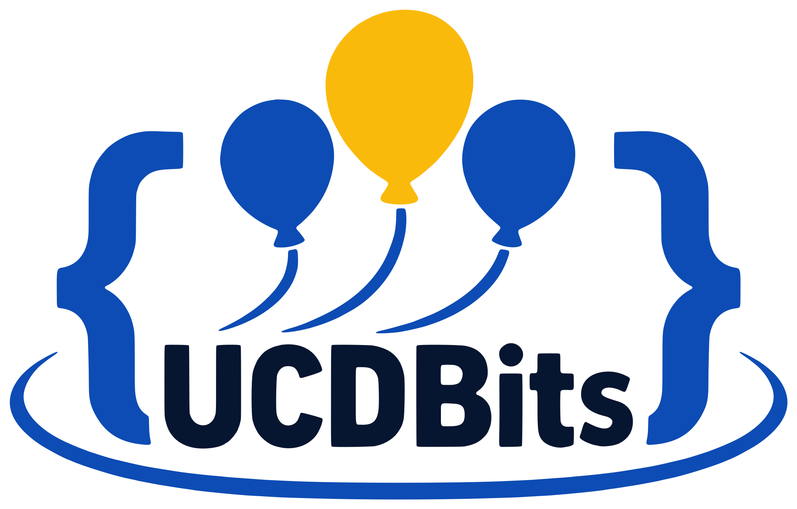

I Maratona de Programação UCDBits
- Quando
- 4 e 5 de dezembro de 2026
- Onde
- Universidade Católica Dom Bosco, Campo Grande – MS
Inscrições abertas e gratuitas de 11 de novembro a 2 de dezembro, até 23h59.
Sobre
A I Maratona de Programação UCDBits é uma competição de programação em equipes promovida pela Universidade Católica Dom Bosco, no formato da Maratona SBC de Programação, etapa sul-americana do International Collegiate Programming Contest (ICPC).
Cada equipe usa um único computador para resolver problemas de lógica e programação em C, C++, Java ou Python. As soluções são enviadas a um sistema de correção automática, que testa cada programa e responde na hora se ele foi aceito. Vence a equipe que resolver mais problemas no menor tempo; cada tentativa incorreta soma 20 minutos de penalidade. Durante a prova vale consultar material impresso, mas internet, celulares e ferramentas de inteligência artificial ficam de fora.
Os sete problemas
- A
- B
- C
- D
- E
- F
- G
Como na maratona oficial, cada problema aceito rende à equipe um balão da cor da sua letra.
Programação
Sexta-feira 04.12.2026
- 19h10–21h30Treino livreApresentação das regras e do sistema de submissão. Não conta para a classificação.
Sábado 05.12.2026
- 9h00–10h00CredenciamentoLeve documento oficial com foto.
- 10h00–10h30Abertura e orientações finais
- 10h30–13h30Prova oficialTrês horas, sete problemas.
- a partir 11h30LancheServido durante a prova, sem pausar o relógio.
- após 13h30Resultado e premiação
Inscrições
11.11 a 02.12até 23h59 · gratuitas
A inscrição é individual e feita pelo Even3. Cada integrante preenche o formulário informando o mesmo nome de equipe; a equipe está inscrita quando os três concluírem. Podem participar estudantes de graduação e de pós-graduação da UCDB e estudantes de outras instituições de ensino.
- Geral
Equipes formadas por estudantes de graduação da UCDB.
- Feminina
Equipes de três alunas de graduação da UCDB. Concorrem também na Geral.
- Café com Leite
Equipes com ao menos um estudante de outra instituição ou da pós-graduação. Classificação própria.